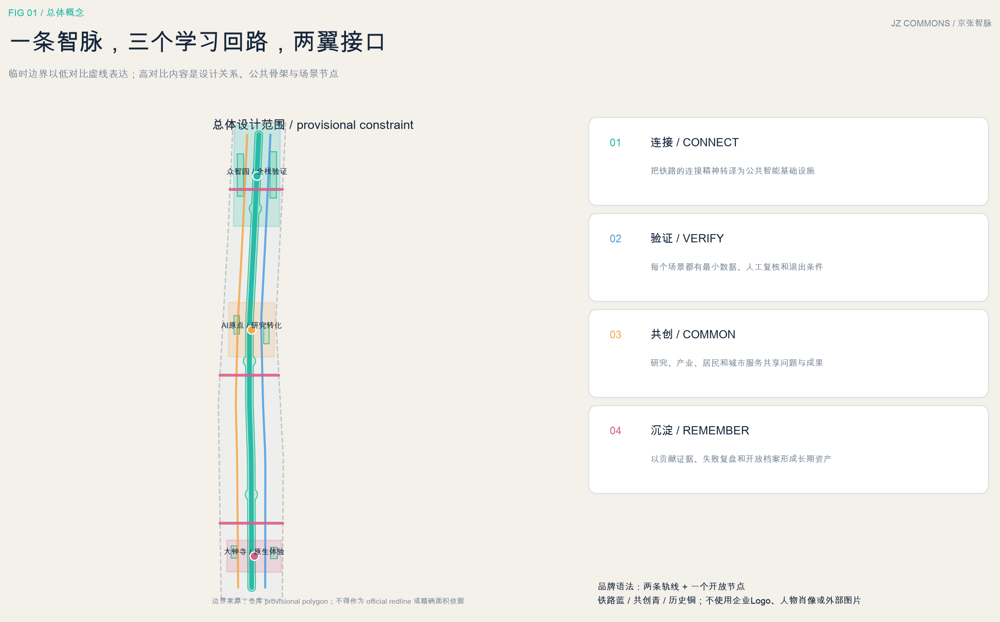
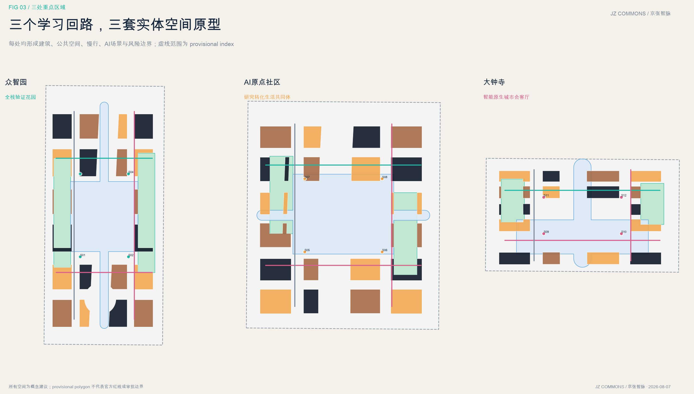

京张智脉：可验证的AI城市共创带
以百年铁路的连接精神为原型，构建一条可验证、可共创、可持续运营的AI公共基础设施带；以一条智脉、三个学习回路、两翼接口串联科研、产业、社区与文化，并对临时边界和缺失控规保持明确披露。
京张智脉：可验证的AI城市共创带
本方案的英文工作名为 **JingZhang Commons**，简称 **JZ Commons**。它不是把“AI”贴在传统园区上，而是把百年京张铁路所代表的连接、标准、协作与持续演进，转译为可公开验证的城市共创协议。所有空间落地内容均为概念建议、参考方案或可供专业团队深化研究的材料，不替代正式规划，不构成政府审定结论。

> 图示说明：以上为 AI 生成的原创概念效果图，只用于表达“遗址绿脊—混合街坊—公共创新客厅”的空间气质，不是现状照片、官方总平面、建设效果承诺或面积计算依据。权威证据仍为本包 GeoJSON、metrics 与矩阵。
设计依据与资料清单
方案依据采用“来源登记—用途边界—结构化数据—可读解释—人工复核”五级链条。仓库公开任务入口为 brief/public-brief.md；官方公告用于确认项目名称、三层范围约值和设计任务；清权的智能体任务书用于确认六项共创任务；住建和自然资源专业文件用于约束城市设计、控规边界与用地分类语言；仓库临时 polygon 只用于生成、自检和展示。六个国际案例全部来自案例机构或城市政府的公开页面，只作为机制背景，不支撑本项目红线、控规或绩效承诺。[source:OFFICIAL-ANNOUNCEMENT] [source:AGENT-TASKBOOK] [source:SITE-PACKAGE] [source:SOURCE-REGISTRY] [source:PROCESSED-FACT-PACK]
当前没有取得官方精确 SITE_BOUNDARY、三处 KEY_AREA、控规、道路红线、现状建筑、权属、市政和文保控制线。提交包据此保留九项待补假设，且 geometry/constraints.geojson 维持空的约束登记层，避免用推测线代替权威图件。[source:BOUNDARY-SOURCE] [source:KEY-AREA-SOURCE] [data:geometry/constraints.geojson] [depth:existing_conditions_diagnosis] [depth:risk_missing_data]
专业响应以本地快照为证据：项目公告和智能体任务书确定任务语境，城市设计管理办法要求统筹建筑、景观、公共空间与特色，控规办法提醒法定指标必须来自审批体系，用地分类指南统一结构化代码；建筑设计深度文件因缺官方正文仅列为资料缺口，不冒充已满足依据。[standard:PROJECT-OFFICIAL-ANNOUNCEMENT] [standard:PROJECT-AGENT-OPEN-CALL-TASKBOOK] [standard:MOHURD-URBAN-DESIGN-MEASURES] [standard:MOHURD-CONTROL-DETAILED-PLANNING] [standard:MNR-LAND-USE-CLASSIFICATION-GUIDE] [standard:MOHURD-ARCH-DESIGN-DEPTH-2016]

现状诊断与设计目标
本方案不把资料缺口伪装成“现状分析”。当前可确认的是范围约值、三处重点区任务、三区两翼结构和京张遗址公园连续公共主线；不可确认的是精确红线、逐栋建筑、权属、道路断面、轨道接口、文保、市政、公服与法定控制。诊断因此分成“已知事实—关键未知—设计响应”三列：已知事实支撑总体关系，关键未知进入假设登记，设计响应只采用可逆、相对、可复算的空间原型。[source:OFFICIAL-ANNOUNCEMENT] [source:SITE-PACKAGE] [source:PROCESSED-FACT-PACK] [depth:existing_conditions_diagnosis] [depth:risk_missing_data]
五个设计目标为：形成连续可进入的公共智脉；让研发、转化、生活与体验在步行尺度发生；为产业测试设置清晰安全边界；以保留优先和低碳改造控制更新冲动；把场景复盘、文化记忆和贡献记录沉淀为长期公共资产。目标通过用地、建筑、慢行、蓝绿、公共空间、场景节点与分期图层共同检验，不以单一道路工程代表城市设计。[data:geometry/land_use.geojson] [data:geometry/buildings.geojson] [data:geometry/public_space.geojson] [depth:overall_spatial_structure]

三层范围工作框架
三层范围不是三张同深度图，而是三个判断尺度。统筹研究范围约43.6平方公里，用于回答“世界级AI生态如何协同”；总体设计范围约11.4平方公里，用于回答“城市形态、更新、交通、蓝绿和服务如何互相支撑”；三处重点区公告合计约368.4公顷，用于回答“不同创新阶段需要什么空间接口”。公告面积是约值，提交 SITE-001 的 11.413 平方公里只是临时 polygon 的投影复算，不是官方精确面积。[source:OFFICIAL-ANNOUNCEMENT] [data:geometry/site_boundary.geojson#SITE-001] [data:geometry/key_areas.geojson#PROV-KEY-001] [metric:site_area_sqm] [metric:announced_overall_design_area_sqm] [metric:key_area_count]
空间传导采用“一条智脉、三个学习回路、两翼接口”。一条智脉沿京张遗址公园形成南北连续的公共学习与慢行骨架；三个学习回路分别对应众智园的全栈验证、AI原点社区的研究转化、大钟寺的智能原生体验；中关村科技服务翼接入资本、知识产权和专业服务，小月河场景赋能翼接入公共场景和城市服务。该结构先固定关系，再等待官方 polygon 替换，不把临时边界本身变成构图主角。[depth:three_level_scope_framework] [depth:overall_spatial_structure] [data:geometry/roads.geojson#ROAD-001] [data:geometry/green_space.geojson#GREEN-001]
官方数据替换时执行整包复算：先替换 site_boundary 与 key_areas，再裁切用地、绿地、公共空间、建筑容量样本、道路概念线和分期，重新计算指标、图面、HTML与PDF，最后运行四道自检。这样把“资料暂缺”与“方案质量”分离，同时避免局部换图导致指标和叙述漂移。[depth:metrics_recalculation]

统筹研究范围产业与未来城市研究
**命名与识别。** 主名称“京张智脉”强调历史基础设施向公共智能基础设施的演进；英文名 JingZhang Commons 强调共享规则和公共利益。标志方向由两条平行“轨线”与一个开放节点组成：轨线是京张连接，节点是可进入、可退出、可人工复核的AI回路。图形只使用原创几何，不使用企业标识或人物肖像；主色“铁路蓝”表达可信连接，“共创青”表达开放实验，“历史铜”表达时间沉淀。导视系统与总Logo分层，导视负责方向和风险状态，总Logo负责整体识别。[standard:PROJECT-AGENT-OPEN-CALL-TASKBOOK] [source:AGENT-TASKBOOK]
**五个功能回路。** 全栈自主创新从算力、模型、工具进入众智园测试；世界级创新生态在AI原点社区完成研究、人才、创业与资本连接；AI+场景通过小月河翼进入公共生活；智能化活力城市通过智脉公共空间持续反馈；AI治理话语权通过公开评测、场景登记、退出机制和年度档案形成可审计知识。三区不是三个孤岛，两翼也不是附属道路，而是要素进入与社会反馈的接口。
| 案例 | 经核验的机制摘要 | 可转化而不照搬的做法 | | --- | --- | --- | | Mila，蒙特利尔 | 开放科研、人才培养与产业伙伴在同一协作网络 | 设置公开问题库、联合研究驻留与可复现成果台账 [source:CASE-MILA] | | Vector Institute，多伦多 | 把前沿研究与可信行业采用连接起来 | 建立“研究—工程—行业—治理”翻译岗位与验证门槛 [source:CASE-VECTOR] | | STATION F，巴黎 | 共享、创造与公共生活分区，项目制运营而非只出租工位 | 把公共界面、专属研发和生活支持做成连续但分级的空间 [source:CASE-STATION-F] | | LaunchPad @ one-north，新加坡 | 模块空间、孵化器、加速器与资本形成高密度连接 | 采用可调整空间单元和社区经理，降低团队成长换址摩擦 [source:CASE-ONE-NORTH] | | Seoul AI Hub，首尔 | 城市级人才、创业、研发基础设施与开放创新协同 | 将人才课程、PoC、国际合作和公共体验纳入同一运营仪表板 [source:CASE-SEOUL-AI-HUB] | | 22@，巴塞罗那 | 产业更新与公共空间、住房和城市生活共同推进 | 以街区混合和公共收益校验产业更新，避免单一园区化 [source:CASE-BARCELONA-22AT] |
区域协同采用“问题路由”而非机构罗列：基础研究问题进入高校院所网络，工程验证进入众智园，成果转化进入原点社区和科技服务翼，城市生活问题进入场景赋能翼，国际展示和智能原生商务进入大钟寺，再把评测结果回写公共知识库。该机制不预设企业名单、投资额、产值或政策承诺，只定义可供运营团队深化的接口与责任。[depth:overall_spatial_structure]
全球AI创新生态案例的空间转译
六个案例不以“世界知名”作为选择理由，而以是否提供可核验的组织机制为准：开放科研与伙伴网络、研究到可信采用、项目制校园、模块空间与社区经理、城市级人才/PoC支持、产业更新与公共生活协同。方案只转译其组织、空间和治理方法，不复制品牌、规模或政策条件。[source:CASE-MILA] [source:CASE-VECTOR] [source:CASE-STATION-F] [source:CASE-ONE-NORTH] [source:CASE-SEOUL-AI-HUB] [source:CASE-BARCELONA-22AT]

品牌、Logo 与空间识别系统
“京张智脉”以两条平行轨线和一个开放节点形成原创标志语法：轨线分别指向历史基础设施与公共智能基础设施，开放节点对应可进入、可验证、可退出的共创回路。总Logo负责整体识别，空间导视负责方向、场景状态和风险级别，年度活动识别负责传播，三者不得混用。[source:AGENT-TASKBOOK] [standard:PROJECT-AGENT-OPEN-CALL-TASKBOOK]
命名体系分四级：总品牌“京张智脉 / JingZhang Commons”；空间单元“学习回路、接口门、开放客厅”；年度活动“Commons Week、Testbed Season、JingZhang AI Forum、Open Archive”；贡献节点“首发台、开源里程碑、共创星图”。视觉采用铁路蓝、共创青、历史铜和开放粉，全部为原创几何与系统字体排版，不使用企业标识、人物肖像或未授权图像。[depth:height_massing_character]

总体设计范围城市更新与控规深度城市设计
总体结构以“公共脊柱优先、功能网格适配、节点可逆生长”为判断。land_use.geojson 在临时边界内形成完整无缝分区，先把连续绿地和东西缝合接口锁定，再把科研、创新服务、人才生活、社区服务与文化表达分配到余下空间。分区是用于检验功能平衡的概念模型，不是现行或已批用地；官方控规到位后按地块边界、兼容性、四线和公共利益重新校核。[data:geometry/land_use.geojson#LU-001] [standard:MNR-LAND-USE-CLASSIFICATION-GUIDE] [depth:land_use_layout]
城市更新不直接给出具体建筑“拆、改、留、新”结论，而建立四步决策协议：第一步核验权属、结构安全、年代和文化价值；第二步把可继续使用的建筑列入保留优先；第三步对可调整空间采用低碳、可逆更新；第四步只有在公共利益、法定条件与专业评估一致时才研究补缺或重建。buildings.geojson 的 78.5 公顷只是概念容量样本，不代表现状建筑或获准建设量。[data:geometry/buildings.geojson#BLDG-001] [metric:building_footprint_area_sqm] [metric:building_coverage_reference_ratio] [depth:retain_renovate_demolish]
风貌控制采用相对关系而非伪造数值：遗址公园界面以连续、低扰动和可逆设施为先；重点节点用公共首层、可见研发和共享设施形成城市性；建筑体量应通过日照、风环境、景观、文保和交通承载共同校核；高度、容积率和密度保持 unknown。该表达达到“提出控制方法和证据缺口”的城市设计深度，但不越权生成法定控制。[metric:floor_area_ratio] [metric:building_height_m] [depth:development_intensity_controls] [depth:height_massing_character] [standard:MOHURD-CONTROL-DETAILED-PLANNING]
九个概念更新项目作为可深化清单：智脉连续绿道、北部全栈评测公社、原点成果转化客厅、南部智能原生生活实验场、三条东西缝合接口、贡献者里程碑系统、公共AI学习站、端侧算力与能源接口、开放场景登记台。每项先写依赖条件和退出机制，再讨论空间载体，防止“项目名称”被误读为已确定投资或实施安排。[metric:renewal_project_count] [depth:renewal_project_list]
完整总体总平面与空间分级
总体总平面不再以道路为主角，而以“公共空间先行—建筑街坊围合—慢行穿行—场景嵌入”为四层关系。连续智脉绿地串联三处重点区，东西接口把被铁路切分的城市界面重新缝合；科研、创新服务、人才生活、社区服务和文化表达形成南北有差异、东西可混合的街坊。当前生成 56 个概念建筑单元，仅用于检验组团、庭院、公共首层和开放空间的关系；任何单元都不是现状建筑识别、批准建设量或具体拆改结论。[data:geometry/buildings.geojson] [data:geometry/land_use.geojson] [metric:building_footprint_area_sqm] [metric:building_coverage_reference_ratio] [depth:land_use_layout]
重点区内部采用四类空间层级：连续公共脊柱承担跨区慢行与文化叙事；城市客厅承担公开学习、论坛与展览；半开放庭院承担研究转化和团队协作；受控试验空间承担具身、能耗、无障碍等测试。分级通过访问规则、开放时间、人工值守和停止机制管理，而不是用封闭围墙把研发与城市隔离。[data:geometry/public_space.geojson] [depth:three_key_area_detailed_design]

建筑体量、街道界面与典型剖面
建筑控制采用相对体量带而不伪造高度：遗址公园边缘优先低层公共界面和退让绿化；研发街坊采用中低层、可分可合的庭院组团；轨道与城市门户可研究中层混合街坊，但必须由控规、日照、消防、文保、景观和交通承载共同校核。首层沿主要公共空间优先布置可进入的学习、展示、会议和生活服务，研发安全空间退居内院或上层。[metric:building_height_m] [metric:floor_area_ratio] [depth:development_intensity_controls] [depth:height_massing_character]
三类剖面分别校验智脉遗址公园界面、众智园测试花园和原点社区共创庭院。每类剖面同时表达步行、骑行、雨洪、公共首层、试验边界与人类值守；不表达道路红线、地下工程、市政容量或准确建筑高度。[depth:traffic_rail_slow_parking] [depth:blue_green_public_space]

重点区域详细设计
三处重点区都使用临时粗略 polygon，只作为详细设计内容的索引。**众智园AI自主创新加速区**定位为“全栈验证花园”：以公开评测公社为核心，串联端侧算力、模型安全、具身智能与标准讨论；公共空间采用可封控、可恢复的试验环，研发载体采用共享设备和分级访问，交通侧重北部对外接口与内部步行循环。任何测试必须登记任务、数据、风险、人类负责人和退出条件。[data:geometry/key_areas.geojson#PROV-KEY-001]
**北京AI原点社区**定位为“研究转化生活共同体”：把高校源头创新、开源项目、创业团队、人才生活和公共学习放在步行可达的关系中。空间上以成果转化客厅连接研发、孵化、社区服务和文化界面；建筑更新采用保留优先和小尺度可逆嵌入；轨道站点一体化只提出连续步行、清晰导引和换乘服务的目标，不给出工程线位或四象限改造结论。[data:geometry/key_areas.geojson#PROV-KEY-002]
**大钟寺AI产业聚集区**定位为“智能原生城市会客厅”：围绕智能体、智能终端、内容消费与国际活动建立开放展示、商务协作和公共体验的组合；以南部门户、共创星图和多语协作台形成城市到产业的第一界面；商业服务与公共空间互相渗透，但不得使用未授权企业品牌。大钟寺站周边只表达步行连续、非机动车秩序和多模式接驳原则，工程可行性待专业团队深化。[data:geometry/key_areas.geojson#PROV-KEY-003]
三个学习回路通过同一套治理协议连接：场景登记、最小数据、人工复核、公开指标、到期复评、失败可退出。重点区的建筑规模、具体拆改留和交通工程均需在 official polygon、现状测绘、权属、控规、市政和文保资料到位后重做；当前成果的完整性在于定位、关系、证据链和深化接口，而非伪造精确度。[depth:three_key_area_detailed_design]

众智园：全栈验证花园
概念总平面以中央受控测试花园为核心，两侧布置共享实验、开放评测、孵化与教育科研组团，外围以公共首层慢行街和绿荫骑行联系城市。测试环不与日常步行混行：通过软隔离、状态灯、现场值守和停止按钮进行分时管理；公众可以观察、提问和参与共测，但不进入高风险区域。建筑采用可分可合的中低层庭院，公共论坛位于智脉绿脊一侧，形成“看得见研发、看得见治理”的城市界面。[data:geometry/key_areas.geojson#PROV-KEY-001] [data:geometry/buildings.geojson] [data:geometry/public_space.geojson#PUBLIC-002] [depth:three_key_area_detailed_design]


> 效果图为 AI 生成的原创空间意向，只表达公共步道、受控试验环、共享实验与人工值守关系，不代表现状、审批或建成承诺。
AI原点社区：研究转化生活共同体
概念总平面以开放共创庭院连接教育科研、孵化、人才生活与社区服务；东西向公共穿行把智脉与周边社区相接，保留优先候选和可逆新构件共同形成多年代街坊。成果转化客厅位于公共首层，开源协作庭院提供短周期团队驻留，社区AI学习站面向居民，人才生活单元避免形成封闭宿舍岛。任何“保留”或“改造”分类都只是调查框架，需逐栋核验。[data:geometry/key_areas.geojson#PROV-KEY-002] [data:geometry/buildings.geojson] [data:geometry/public_space.geojson#PUBLIC-003] [depth:retain_renovate_demolish]


> 效果图为 AI 生成的原创空间意向，只表达适应性更新、公共学习、无障碍与绿脊联系，不代表具体建筑现状或产权处置。
大钟寺：智能原生城市会客厅
概念总平面以到达广场、可逆论坛亭和智能原生体验街构成城市门户；混合街坊的公共首层承接展览、国际协作、生活服务与夜间活动，中央绿荫步道连接智脉。门户不依赖巨型屏幕或标志塔，识别来自连续檐廊、铜色可逆构件、清晰导引和公共活动。轨道接驳、道路组织、商业容量和夜间管理均须后续专项评估。[data:geometry/key_areas.geojson#PROV-KEY-003] [data:geometry/buildings.geojson] [data:geometry/public_space.geojson#PUBLIC-004] [depth:three_key_area_detailed_design]


> 效果图为 AI 生成的原创空间意向，只表达公共论坛、混合首层、遮阴与慢行到达关系，不代表商业项目、投资或政府实施安排。
AI 创新生态、人才画像与 AI+ 场景
场景设计采用“服务对象—空间—数据—人工复核—运营—退出”六联表。任何场景都不得以个人隐私、持续人脸识别、不可解释自动处罚或指定供应商作为必要条件；产业测试也不能写成已获运营许可。十二个节点已写入 public_space.geojson，其中四个明确为产业测试验证场景，超过任务书最低数量。[data:geometry/public_space.geojson#NODE-001] [metric:scenario_node_count] [metric:test_validation_scenario_count]
| ID | 场景 | 类型 | 空间 | 最小数据边界 | 人工复核与退出 | | --- | --- | --- | --- | --- | --- | | S01 | 开源模型评测公社 | 产业测试验证（测试验证） | 众智园 | 匿名任务数据+公开基准 | 人工确认、可暂停、留痕复盘 | | S02 | 具身智能安全慢行试验环 | 产业测试验证（测试验证） | 众智园 | 模拟环境+人工封控日志 | 人工确认、可暂停、留痕复盘 | | S03 | 边缘算力能耗调度沙盒 | 产业测试验证（测试验证） | AI原点社区 | 设备聚合数据 | 人工确认、可暂停、留痕复盘 | | S04 | 无障碍导航共测路线 | 产业测试验证（测试验证） | 全带公共空间 | 自愿反馈+障碍点台账 | 人工确认、可暂停、留痕复盘 | | S05 | 研究成果到创业团队匹配台 | 创新服务 | AI原点社区 | 公开成果元数据 | 人工确认、可暂停、留痕复盘 | | S06 | 社区AI学习伙伴站 | 公共服务 | 两翼接口 | 本地会话+最小留存 | 人工确认、可暂停、留痕复盘 | | S07 | 多模式出行协同助手 | 交通服务 | 六处接口门 | 实时公开交通信息 | 人工确认、可暂停、留痕复盘 | | S08 | 公共空间舒适度共治助手 | 空间运营 | 京张智脉公园 | 非识别环境数据 | 人工确认、可暂停、留痕复盘 | | S09 | 健康服务导引而非诊断 | 生活服务 | 社区服务节点 | 服务目录+人工转介 | 人工确认、可暂停、留痕复盘 | | S10 | 京张记忆叙事智能体 | 文化体验 | 首发台/里程碑 | 清权史料索引 | 人工确认、可暂停、留痕复盘 | | S11 | 国际活动多语协作台 | 国际传播 | 大钟寺 | 活动公开资料 | 人工确认、可暂停、留痕复盘 | | S12 | 城市问题分拨协作台 | 治理辅助 | 公共服务接口 | 脱敏工单+人工确认 | 人工确认、可暂停、留痕复盘 |
六类用户画像用于校验场景是否只服务少数技术人员。研究者需要可复现实验和同行连接，初创团队需要可承担的试验和转化入口，成熟企业需要可信验证与标准对话，居民需要安全、无障碍和实际便利，国际访客需要清晰文化与合作入口，城市服务人员需要可解释告警和人工接管。画像不是对个人的预测标签，而是服务设计的角色假设。[metric:persona_count]
| ID | 用户画像 | 核心需求 | 场景—空间映射 | | --- | --- | --- | --- | | P1 | 研究者与开源贡献者 | 跨机构协作、算力与可复现实验 | 评测公社+原点社区 | | P2 | 初创团队与产品工程师 | 低门槛试验、用户反馈、产业连接 | 测试环+众智园 | | P3 | 成熟企业创新团队 | 可信验证、标准讨论、场景伙伴 | 三处重点区+两翼 | | P4 | 居民、儿童与老年人 | 安全、无障碍、学习与日常便利 | 社区站+连续公共空间 | | P5 | 国际访客与活动参与者 | 清晰导引、文化理解、合作入口 | 大钟寺门户+智脉路线 | | P6 | 城市服务人员与专业复核者 | 可解释告警、人工接管、责任追踪 | 场景登记台+治理协作台 |
运营上设置三级门槛：公开体验只用公开或现场自愿数据；受控试验须有风险评估、现场负责人和停止按钮；涉及公共服务判断的系统只提供建议，由具备职责的人类确认。每次试验发布目标、输入范围、已知局限和复盘摘要，形成“可失败但不可失责”的城市学习机制。[standard:PROJECT-AGENT-OPEN-CALL-TASKBOOK]
十二个场景按“研究与开源—验证与转化—城市服务—公共治理”四层组织，并通过统一门禁形成闭环：场景先登记问题与责任人，再限定最小数据，通过风险评审后受控运行，公开复盘，最后到期续期或退出。场景图谱的连线是运营和证据关系，不代表数据可以跨主体自由流动。[standard:PROJECT-AGENT-OPEN-CALL-TASKBOOK] [data:geometry/public_space.geojson]

用地、建筑规模与拆改留方案
概念用地先保障连续公共骨架，再组织功能复合。下表面积来自临时 SITE_BOUNDARY 内的无缝拓扑分区，可复算但不可当作审定用地指标；各类面积之和等于临时范围面积。科研与创新服务形成工作载体，人才生活和社区服务形成日常支撑，文化用地承接京张与中关村叙事，绿地和概念道路保证连续公共界面。[data:geometry/land_use.geojson] [depth:land_use_layout]
| 代码 | 概念用途 | 临时分区面积 | 使用边界 | | --- | --- | ---: | --- | | 0802 | 科研用地 / AI研发 | 220.6 ha | 概念分区，official polygon 与控规到位后复算 | | 05 | 商业服务业 / 创新服务 | 273.7 ha | 概念分区，official polygon 与控规到位后复算 | | 0701 | 城镇住宅 / 人才生活 | 160.9 ha | 概念分区，official polygon 与控规到位后复算 | | 0702 | 社区服务 / 公共配套 | 169.4 ha | 概念分区，official polygon 与控规到位后复算 | | 0803 | 文化用地 / 京张叙事 | 81.3 ha | 概念分区，official polygon 与控规到位后复算 | | 1401 | 公园绿地 / 智脉公园 | 186.0 ha | 概念分区，official polygon 与控规到位后复算 | | 1207 | 道路用地 / 概念缝合 | 49.4 ha | 概念分区，official polygon 与控规到位后复算 |
建筑层不估算总建筑规模、容积率或高度。概念基底只用于检验公共空间、慢行和功能关系，不能推导建设量。正式深化应把现状建筑逐栋纳入“价值—安全—碳—适配—权属”矩阵，输出保留、修缮、功能转换、局部更新和新建候选，再由法定规划与专业设计确认。未取得现状数据前，本稿不标注任何具体建筑为拆除或已确定改造。[metric:total_floor_area_sqm] [depth:retain_renovate_demolish]
空间供给建议采用可调整单元：研发空间预留共享设备和安全分区，孵化空间允许短周期扩缩，公共首层提供会议、展示和社区学习，人才生活与工作空间通过慢行而非封闭园区相连。该模式参考案例的组织机制，但每一单元的位置、规模、消防、能源和产权安排都需后续专业核验。[source:CASE-ONE-NORTH] [source:CASE-STATION-F]
拆改留不采用“先画颜色、后找依据”的做法，而采用四阶段闸门：调查建档、价值分级、动作候选、人类复核。保留优先候选关注文化与公共记忆，适应性改造候选关注结构可用与碳效益，核权后补缺候选只有在公共利益、法定条件与专业评估一致时才进入研究。当前 renewal_logic 仅用于展示这种决策协议。[data:geometry/buildings.geojson] [depth:retain_renovate_demolish]

交通、轨道、市政与公共服务设施
交通系统由一条南北绿道、东西两条内部接驳路径和三条缝合接口构成。roads.geojson 记录的是设计意图中心线：总概念线长约 42.2 公里，其中智脉绿道约 9.2 公里。它们用于检查网络连续和节点服务，不代表道路红线、桥隧、轨道线位或施工方案。[data:geometry/roads.geojson#ROAD-001] [metric:road_centerline_length_m] [metric:greenway_length_m] [depth:traffic_rail_slow_parking]
六处接口门按“先步行与无障碍、再自行车、再接驳服务、最后小汽车组织”排序。轨道站点周边建议设置清晰的步行分配、非机动车停放、夜间照明和多语导引，但具体位置与容量必须用官方站点、道路断面和客流模型校核。停车策略以共享、预约和错峰为研究方向，不给出数量承诺。
市政与新基建采用模块接口：端侧算力舱只处理经授权的场景任务，能源接口记录峰值与碳强度，公共空间传感优先非识别环境数据，雨洪与热舒适监测服务蓝绿空间运维。任何设施接入需通过网络安全、能耗、消防、管线和运维责任评审；在数据缺失时不推导容量或迁改方案。[depth:municipal_new_infrastructure]
公共服务形成“学习站—创新服务台—生活服务节点”三级网络。学习站面向居民与访客，创新服务台面向研究和创业团队，生活服务节点提供目录、导引和人工转介。该体系只定义服务能力和空间接口，不编造学校、医疗、养老等既有设施容量。

蓝绿空间、公共空间与城市风貌
蓝绿系统以京张遗址公园为连续公共脊柱，绿地占临时范围约 16.3%，公共空间占约 10.4%。两项比率都来自提交图层与临时边界的EPSG:4548复算，仅用于比较方案内部结构，不是法定绿地率或公共空间指标。[data:geometry/green_space.geojson#GREEN-001] [metric:green_space_area_sqm] [metric:green_ratio] [metric:public_space_area_sqm] [metric:public_space_ratio] [depth:blue_green_public_space]
文化叙事采用“三段时间、一条共同轨迹”：第一段讲京张铁路以工程标准连接城市与区域，第二段讲中关村以知识、市场和制度创新连接研究与产业，第三段讲AI时代以开放模型、可信评测和公共治理连接机器能力与人的尊严。表达载体包括地面里程、声音档案索引、可更新贡献卡和多语导引；只使用清权文字、原创图形和公共领域事实，不复制历史照片、商标或论文图像。
三处AI朝圣与荣誉节点均为可逆公共组件：北部“首发台 Genesis Platform”展示公开评测问题和失败复盘；中部“开源里程碑 Open Source Mile”按可核验贡献而非商业赞助排序；南部“共创星图 Commons Constellation”把国际项目、社区提案与城市问题连接成可更新地图。荣誉展示需有提名、证据、异议和撤回机制，避免把技术崇拜做成永久雕塑。
公共空间组件库包括可移动试验桌、带人工服务按钮的学习站、无障碍触觉导引、风险状态灯、非识别环境传感器和可拆卸展示架。建筑风貌强调清晰基座、可见研发、温和材料和夜间可读性；具体高度、屋顶和色彩须结合文保、景观和控规深化。[standard:MOHURD-URBAN-DESIGN-MEASURES]
公共空间组件库提供六种可逆原型：开放学习亭、受控试验环、雨洪花园、无障碍导引、贡献展示架和端侧算力舱。每个组件同时说明公共服务、数据边界、人工介入和撤除方式；组件位置与数量需结合正式测绘、地下管线、消防、树木和文保条件深化。[depth:blue_green_public_space] [depth:municipal_new_infrastructure]

更新项目清单、实施政策与分期计划
九个概念项目按“可逆先行、证据升级、长期协同”分三期写入 phasing.geojson。近期优先完成官方资料补齐、开放场景登记台、连续步行诊断、公共AI学习站和可逆导视；中期在三处重点区分别建立验证、转化、体验回路并打通东西接口；远期只有在规划、权属、文保、市政和公众评估通过后，才研究较大尺度空间更新。三期是决策顺序，不是已确定工期。[data:geometry/phasing.geojson#PHASE-001] [metric:phase_count] [depth:phasing_implementation]
年度运营形成四季循环：春季“Commons Week”发布城市问题和开源任务；夏季“Testbed Season”开展受控试验与公众观察；秋季“JingZhang AI Forum”复盘标准、治理与国际合作；冬季“Open Archive Release”发布数据字典、失败案例和下一年议程。活动名称与安排均为概念建议，需由合法运营主体、场地方和主管部门深化确认。
长期治理建议设立开放共创议事机制，包含公共利益席、技术与安全席、专业规划席、运营席和居民观察席。开发者社区通过问题库、贡献记录、导师驻留和维护者轮值持续运行；场景开放通过申请、伦理与安全评审、沙盒、公开复盘和退出完成闭环；国际传播采用双语证据卡，避免只展示效果图。
招引转化不是招商承诺，而是“访问—加入—测试—共创—转化—知识回流”的路径：访客先理解城市问题，团队以小任务进入，合格场景在受控环境测试，专业伙伴共同验证，成熟成果再依法进入孵化或采购讨论，最后把可公开经验回写知识库。每一步都设退出条件和人工判断。[source:AGENT-TASKBOOK]
空间分期与年度运营使用两条时间线互相校验：近期可逆项目必须能为中期三处学习回路积累数据，中期项目必须能为远期法定深化提供证据；每年春、夏、秋、冬分别完成问题发布、受控测试、标准复盘和开放归档。没有复盘产出的活动不进入下一周期，没有退出机制的场景不进入公共空间。[data:geometry/phasing.geojson] [depth:phasing_implementation]

指标体系、面积复算与合规矩阵
指标分为三类：空间复算指标由GeoJSON投影到EPSG:4548计算；任务数量指标由结构化节点和可读清单计数；法定控制指标在资料缺失时保持unknown。临时边界面积与公告约值接近并不把它升级为官方红线。用地分区完整覆盖、无重叠；绿地与公共空间分别由独立图层求并集；概念建筑基底只表达容量样本。[depth:metrics_recalculation]
本包已设置23条公告与agent任务响应、5条强制专业标准响应、15项formal设计深度和9项资料假设。compliance_matrix.json 把每条任务映射到正文、图层、指标、图纸、HTML、来源和自检；standard_matrix.json 说明专业依据；design_depth_matrix.json 说明“完成”的证据范围，而不是资质或批准证明。正式提交前仍以仓库 deterministic validation、spatial review、visual packaging check 和 professional evidence review 的实际输出为准。
已知指标的机器引用如下，便于评审器逐项核对：[metric:site_area_sqm] [metric:announced_overall_design_area_sqm] [metric:green_space_area_sqm] [metric:green_ratio] [metric:public_space_area_sqm] [metric:public_space_ratio] [metric:building_footprint_area_sqm] [metric:building_coverage_reference_ratio] [metric:road_centerline_length_m] [metric:greenway_length_m] [metric:key_area_count] [metric:scenario_node_count] [metric:test_validation_scenario_count] [metric:persona_count] [metric:renewal_project_count] [metric:phase_count] [metric:land_use_0802_area_sqm] [metric:land_use_05_area_sqm] [metric:land_use_0701_area_sqm] [metric:land_use_0702_area_sqm] [metric:land_use_0803_area_sqm] [metric:land_use_1401_area_sqm] [metric:land_use_1207_area_sqm]

完整设计成果索引
本次完整迭代已形成：总体鸟瞰概念效果、现状证据诊断、品牌与Logo系统、总体设计总平面、完整用地与建筑基底、交通慢行和蓝绿系统、三处重点区概念详细总平面、三类典型剖面、城市更新决策图、公共空间组件库、AI生态与场景图谱、分期运营图、指标证据图，以及同步的 GeoJSON、metrics、三类矩阵、离线HTML、A3文册和A0展板。图面表达与机器数据分工明确：设计图负责解释空间，结构化文件负责复算与审计。[depth:metrics_recalculation] [data:geometry/site_boundary.geojson] [metric:site_area_sqm]
效果图均由 OpenAI Codex 图像生成工具根据本方案的原创概念提示生成，无外部图片输入；它们只承担空间氛围和人本使用关系表达，不用于边界、面积、法定控制、现状识别或工程可行性判断。完整提示意图与限制写入版权声明。[source:SOURCE-REGISTRY]
风险、版权与合规说明
最大风险不是“方案不够精确”，而是把临时资料写得过于精确。为此，本包在正文、GeoJSON、HTML、PDF、sources和assumptions中重复标记 provisional 状态；任何替换 official polygon 的操作都触发全图层复算。控规、道路、建筑、权属、文保、市政和设施底数均保留待补清单，不用算法补齐权威缺口。[depth:risk_missing_data]
隐私与算法风险通过最小数据、目的限定、现场告知、自愿参与、人工复核、可暂停、到期删除和公开复盘控制。公共服务场景不进行自动处罚、医疗诊断或不可申诉的资源分配；测试验证场景必须有合法运营主体和专业安全评审。技术成熟度不足时优先在模拟或封闭环境测试。
版权方面，文本、概念几何、信息图、HTML和PDF由所声明AI智能体根据列明的公开或清权数据生成；未使用外部地图瓦片、新闻图片、企业Logo、人物肖像或论文图像。六个国际案例只做文字机制摘要，权利仍归原发布方。详细声明见 report/copyright_statement.md。方案以CC-BY-4.0贡献给开源知识库，但不改变第三方来源自身权利，也不替代官方征集的知识产权条款。
所有空间落地建议均为概念建议、参考方案或可供专业团队深化研究；不构成控规调整、容积率、建筑高度、具体拆改留、工程线位、市政容量、投资测算、开发时序、审批判断、政策资金或活动安排的最终结论。最终判断由人类、法定主管部门和具备相应能力的专业团队完成。
参考资料
本稿使用的正式任务依据包括：北京市规划和自然资源委员会海淀分局发布的资格预审公告、仓库中的面向智能体任务书摘录、城市设计管理办法、城市镇控制性详细规划编制审批办法以及国土空间用地用海分类指南。本地路径、访问日期、发布机构、允许用途和禁止用途均记录在 sources.json，避免在离线报告中加载远程资源。[source:OFFICIAL-ANNOUNCEMENT] [source:AGENT-TASKBOOK] [source:SITE-PACKAGE]
背景案例包括Mila、Vector Institute、STATION F、LaunchPad @ one-north、Seoul AI Hub和Barcelona 22@。它们只用于比较开放科研、研究转化、模块空间、社区运营和产业更新机制；任何案例的规模、投资、企业名单、制度或绩效都不直接移植到海淀。[source:CASE-MILA] [source:CASE-VECTOR] [source:CASE-STATION-F] [source:CASE-ONE-NORTH] [source:CASE-SEOUL-AI-HUB] [source:CASE-BARCELONA-22AT]
机器证据包括九个GeoJSON文件、metrics、assumptions、sources、三类矩阵、五张核心图、离线HTML和A3/A0图纸。数据用途由登记表与事实包导航，临时边界分别通过边界来源和重点区来源披露。[source:SOURCE-REGISTRY] [source:PROCESSED-FACT-PACK] [source:BOUNDARY-SOURCE] [source:KEY-AREA-SOURCE]